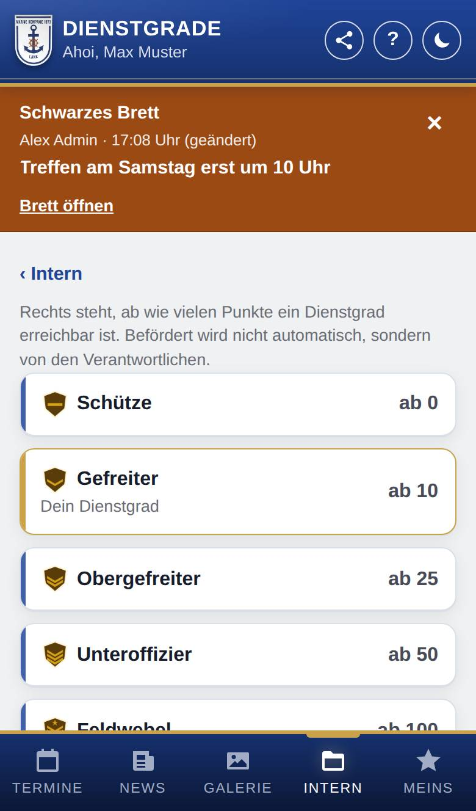

Dienstgrade
Nur, wenn Dienstgrade eingeschaltet ist.
Hier siehst du alle Dienstgrade der Marinekompanie Lank der Reihe nach, mit ihren Abzeichen. Gibt es bei euch auch Punkte, steht bei jedem Dienstgrad dabei, ab wie vielen Punkte er erreichbar ist. Die Seite ist nur zum Nachschlagen.

So öffnest du die Seite
Tippe unten auf Intern und dann auf den Knopf Dienstgrade. Mit ‹ Intern kommst du zurück.
Was du hier siehst
- Alle Dienstgrade vom niedrigsten zum höchsten, jeweils mit Abzeichen, wenn die Verantwortlichen eines hinterlegt haben.
- Dein eigener Dienstgrad ist markiert („Dein Dienstgrad“).
- Mit Punkte: oben ein kurzer Hinweis und rechts bei jedem Dienstgrad die Schwelle, z. B. „ab 25“. Dienstgrade ohne Schwelle haben rechts nichts.
- Gibt es noch keine Dienstgrade, steht dort „Noch keine Dienstgrade angelegt.“
Gut zu wissen
- Die Schwelle sagt nur, ab wann ein Dienstgrad erreichbar ist. Befördert wird nicht automatisch, sondern von den Verantwortlichen.
- Wie weit du selbst bis zum nächsten Dienstgrad bist und wann sich deiner geändert hat, steht unter Meins → Dienstgrad.
- Die Dienstgrade anderer Mitglieder siehst du hier nicht.